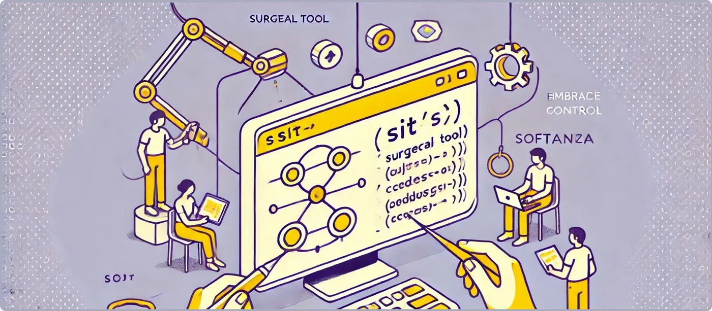

Mastering Precision with the Sit() Function
The Sit() function stands out as a surgical tool for precision string manipulation. Whether you’re designing advanced text editors, processing linguistic data, or debugging complex parsers, Sit() adapts to your needs with unparalleled flexibility. Embrace the control it offers and elevate your string manipulation game with Softanza!
par Mansour Ayouni · dans le dépôt depuis le 2024-12-07 · tutoriel · domaine Chaînes de caractères
Cet article est écrit en anglais, comme la bibliothèque.

Let’s explore practical examples where Sit() excels.
Example 1: Extract Variable Contexts for Text Highlighting
Imagine building a text editor with a live preview that highlights words with their surrounding context. The goal is to extract a substring like "nice" and dynamically include 2 characters before and 3 characters after:
load "stzlib.ring"
o1 = new stzString("what a <<nice>>> day!")
? o1.Sit(
:OnSection = o1.FindAsSection("nice"),
:AndHarvest = [ :NCharsBefore = 2, :NCharsAfter = 3 ]
)
#--> [ "<<", ">>>" ]exécuté le 2026-10-08 20:45 au commit 4a184e6f0 : a tenu sa promesse
Here’s why Sit() is invaluable:
- The number of surrounding characters is not tied to a fixed pattern but is defined based on contextual needs—ideal for previews or summaries.
- Alternative methods like SubStringBounds() are rigid, extracting only exact bounds.
Example 2: Position-Based Extraction for Advanced Tokenization
Suppose you’re tokenizing a sentence and want to dynamically extract letters surrounding a given character (like "i" in "nice") to analyze its immediate context, for tasks such as natural language processing (NLP) or spell checking.
o1 = new stzString("what a <<nice>>> day!")
? o1.Sit(
:OnPosition = 11, # the letter "i"
:AndHarvest = [ :NCharsBefore = 1, :NCharsAfter = 2 ]
)
#--> [ "n", "ce" ]exécuté le 2026-10-08 20:45 au commit 4a184e6f0 : a tenu sa promesse
This showcases Sit()’s precision:
- Anchors the operation to a specific position.
- Dynamically harvests a customizable range around the anchor.
Example 3: Extracting Overlapping Contexts for Deep Inspection
For debugging, you might need to inspect overlapping contexts around a substring (like "nice") and capture the boundaries of its surroundings. Instead of a static range, you define exactly how far before and after to look.
o1 = new stzString("what a <<nice>>> day!")
? @@( o1.Sit(
:OnSection = o1.FindAsSection("nice"),
:AndHarvestSections = [ :NCharsBefore = 2, :NCharsAfter = 3 ]
) )
#--> [ [8, 9], [14, 16] ]exécuté le 2026-10-08 20:45 au commit 4a184e6f0 : a tenu sa promesse
Here, Sit() extracts surrounding section boundaries with custom offsets:
- Surrounding ranges ([8, 9] and [14, 16]) dynamically depend on your NCharsBefore and NCharsAfter parameters.
- This level of granularity is crucial for debugging parsers or extracting overlapping segments in structured text.
NOTE:
@@(val)used above, is a Softanza small function, akin to a pair of glasses that enhance vision, designed to produce a readable string representation of any valueval, especially whenvalis a list.
Conclusion
The Sit() function’s strength lies in:
1. Manual control over context size: Specify how many characters before and after to include—perfect for dynamic, context-sensitive tasks.
2. Support for flexible anchors: Work with positions, sections, or dynamically found substrings.
3. Versatile harvesting: Extract content, section bounds, or both.
Citer
Mansour Ayouni. « Mastering Precision with the `Sit()` Function ». Softanza narrations, 2024. https://mayouni.github.io/stzsite/fr/narrations/stzstring-sit-narration.html
Exécuté au nom de Haro le 2026-10-08 20:45 dans la bibliothèque au commit 4a184e6f0, bloc après bloc dans un seul processus : 3 bloc(s) sur 3 ont tenu leur promesse ; les autres sont des illustrations. Le code des articles est du code Haro. Là où un article a été écrit avant que la langue prenne son nom actuel, le nom a été changé et rien d'autre. Genre, domaine et série lus dans le nom du fichier, année tirée du premier commit : dérivés, jusqu'à ce que l'article porte son propre en-tête. Le fichier sur GitHub(s'ouvre dans un nouvel onglet)